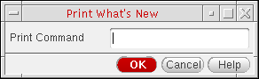

Printing and Refreshing a File
To print the contents of a file in a text window:
-
Choose File – Print.
The Print What’s New form appears.
 - In the Print Command field, type the UNIX print command plus the name of the file in which you placed (using the Save As command) the data.
- Click OK.
The software sends the contents of the named file to the specified printer.
Depending on the application from where the Text Window is opened, the Print option can be unavailable.
To refresh the contents of the current file:
-
Choose File – Refresh.
The contents of file are refreshed.
This command differs from the View – Refresh option in the Library Manager or File – Refresh in CIW, which are used to refresh the reading of thecds.liband other technology files.
Related Topics
Return to top